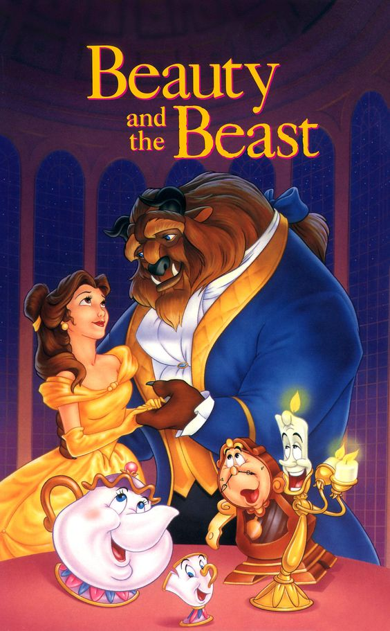

Beauty and the Beast
Once upon a time, in a faraway land, there was a wealthy merchant who lived with his three daughters. The youngest, named Belle, was the most beautiful and kind-hearted of them all. One day, the merchant lost his fortune and was forced to move to a small cottage in the countryside. Despite their changed circumstances, Belle remained cheerful and optimistic.
One day, the merchant received news that one of his ships had returned, and he set off to reclaim his fortune. Before leaving, he asked his daughters what gifts they would like. The older sisters asked for fine clothes and jewels, while Belle asked for a single rose. The merchant found that his ship had been confiscated, and he was left with nothing. On his way home, he became lost in a forest and stumbled upon a magnificent castle.
In the castle garden, he found a rose and plucked it for Belle. Suddenly, a fearsome Beast appeared and accused him of stealing. The Beast demanded that the merchant repay him by sending one of his daughters to live in the castle. Heartbroken, the merchant returned home and told his daughters what had happened. Belle, feeling responsible, volunteered to go to the castle in her father's place.
At the castle, Belle was treated with kindness and given luxurious accommodations. Over time, she came to know the Beast and saw beyond his frightening exterior. She discovered that the Beast was under a curse and that only true love could break the spell. Despite their differences, Belle and the Beast developed a deep bond and genuine affection for each other.
One day, Belle learned that her father was gravely ill. The Beast allowed her to return home, giving her a magic mirror to remember him by. Belle found her father and nursed him back to health. However, her jealous sisters tricked her into staying longer than she intended, hoping to ruin her happiness. When Belle looked into the magic mirror, she saw that the Beast was dying of a broken heart.
Desperate, Belle returned to the castle and found the Beast on the brink of death. She confessed her love for him, and at that moment, the curse was broken. The Beast transformed back into a handsome prince, and the castle and its inhabitants were restored to their former glory.
Belle and the prince were married and lived happily ever after, their love proving that true beauty comes from within and that kindness and compassion can break even the most powerful of curses.